第 6 文档沟通
R 在研究工作中的重要优势，是把数据、分析代码、运行结果和文字叙述组织在同一份文档中。教材将这一能力概括为“文档沟通”，并从可重复研究、网页交互和开发 R 包三个方向展开；Git 则负责记录分析过程中的改动并支持协作。
6.1 R Markdown
6.1.1 Markdown 简介
Markdown 是用纯文本书写的轻量级标记语言。.md 源文件易读、易修改，也可以转换为 HTML、Word、PDF 或 LaTeX 等格式。
6.1.1.1 Markdown 语法
标题用一个或多个 # 表示层级；列表使用 -、* 或连续数字；引用使用 >。教材以“左侧语法、右侧预览”的方式展示这些规则。
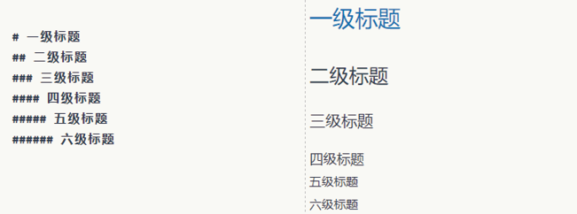
Figure 6.1: 教材图 6.1—6.5：标题、列表、引用和文字格式。
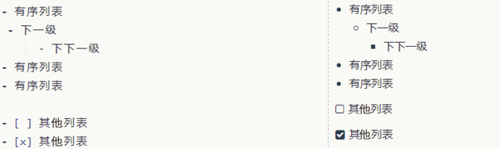
Figure 6.2: 教材图 6.1—6.5：标题、列表、引用和文字格式。
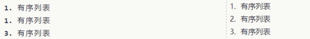
Figure 6.3: 教材图 6.1—6.5：标题、列表、引用和文字格式。
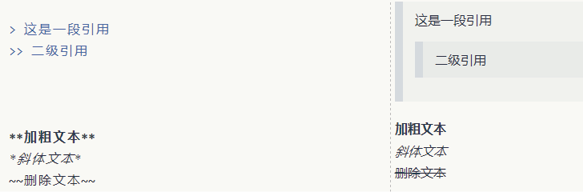
Figure 6.4: 教材图 6.1—6.5：标题、列表、引用和文字格式。
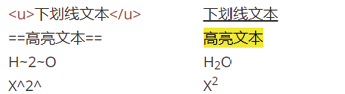
Figure 6.5: 教材图 6.1—6.5：标题、列表、引用和文字格式。
Markdown 支持 LaTeX 数学公式和多种语言的高亮代码块。行内公式放在一对 $ 中，行间公式放在一对 $$ 中；代码块由三枚反引号包围，并可在开头指定语言。
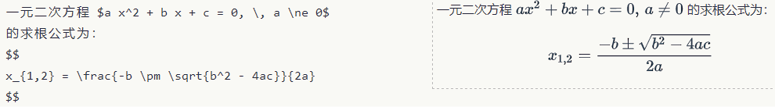
Figure 6.6: 教材图 6.6—6.7：数学公式与高亮代码块。
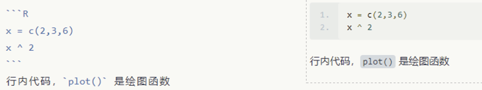
Figure 6.7: 教材图 6.6—6.7：数学公式与高亮代码块。
图片需要提供路径或网址；链接由方括号中的说明文字和圆括号中的地址组成。
{width=80%}
[超链接描述](https://example.com)表格、交叉引用和脚注也可以直接写在 Markdown 中。
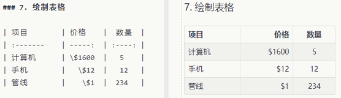
Figure 6.8: 教材图 6.8—6.10：表格、交叉引用与脚注。
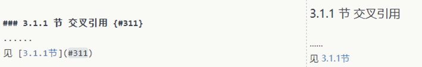
Figure 6.9: 教材图 6.8—6.10：表格、交叉引用与脚注。
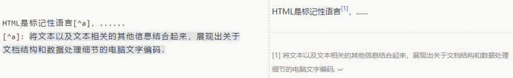
Figure 6.10: 教材图 6.8—6.10：表格、交叉引用与脚注。
6.1.2 R Markdown 基础
R Markdown 在普通 Markdown 中加入可执行代码块。它可以制作数据分析报告、期刊论文、书籍、简历、网站、幻灯片和交互报表。knitr 先执行代码块并生成包含结果的 Markdown 文件，Pandoc 再转换为最终格式。
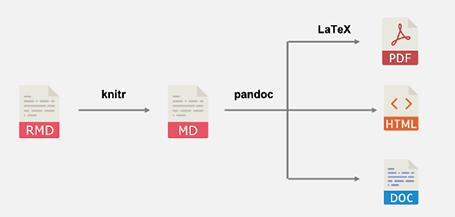
Figure 6.11: 教材图 6.11：R Markdown 文件的编译过程。
6.1.2.1 创建与编译文档
教材在 RStudio 中选择 New File → R Markdown…，填写标题和作者，再选择 HTML、PDF 或 Word。默认模板已经包含 YAML、正文和代码块。
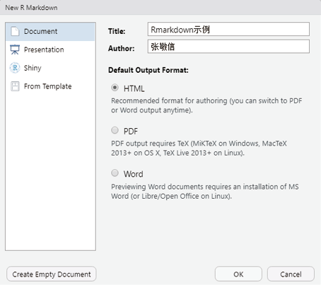
Figure 6.12: 教材图 6.12—6.13：新建 R Markdown 与默认模板。
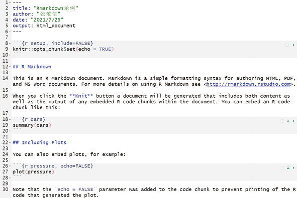
Figure 6.13: 教材图 6.12—6.13：新建 R Markdown 与默认模板。
从 .Rmd 到目标文档的过程称为 knit。除了点击 Knit，也可以运行：
Code
# 指定源文件与目标格式，编译一份 HTML 文档。
rmarkdown::render("rmddemo.Rmd", "html_document")6.1.2.2 YAML
YAML 位于文件开头的一对 --- 之间，由“键: 值”组成，控制标题、作者、日期、参数与输出格式。
---
title: "R Markdown 示例"
author: "王芝皓"
date: "2026-09-22"
output:
html_document:
toc: true
toc_depth: 2
---教材列出的输出包括 HTML、Markdown、PDF、Word、PowerPoint、Beamer、ioslides 与 slidy。还可以设置浮动目录、章节编号、代码折叠、图形尺寸和标题、数据框样式、语法高亮、主题、是否保留中间文件及 Word 参考模板。
output:
word_document:
reference_docx: "template.docx"与 Office 交互的相关包包括：officer 生成 Word/PowerPoint，officedown 编译 Office 文档，flextable 定制表格，mschart 绘制 Office 风格图形，rvg 生成可编辑矢量图。
6.1.2.3 代码块
R 代码块写在 ```{r} 与 ``` 之间。代码块名称便于导航和缓存管理，块选项负责控制代码、消息、警告和结果。
| 选项 | 作用 |
|---|---|
eval = FALSE |
显示代码但不运行 |
echo = FALSE |
运行代码但不显示代码 |
include = FALSE |
运行代码，但代码和结果都不显示 |
message = FALSE、warning = FALSE |
隐藏消息或警告 |
error = TRUE |
出错后继续编译 |
collapse = TRUE |
合并代码与文本结果 |
cache = TRUE |
缓存结果 |
results = "hide" |
隐藏文本结果 |
fig.width、fig.height |
设置图形尺寸 |
fig.align、fig.cap |
设置图形对齐与标题 |
全局选项通常放在文档开头的设置块中，个别代码块再覆盖所需选项。
``` r
# 让所有后续代码块默认显示代码。
knitr::opts_chunk$set(echo = TRUE)
```R Markdown 还支持行内 R 代码。教材先拟合 mtcars 的线性回归模型，再由编译过程把系数自动写入正文。
该模型斜率为 -0.0412，回归方程为 \(mpg = 29.5999 + (-0.0412)\,disp\)。当数据变化时，正文数值会在重新编译后同步更新。
6.1.2.4 插入图片和表格
R 生成的图形可以直接保留为代码块输出；现成图片可使用 Markdown 或 knitr::include_graphics()。RStudio 的可视化编辑器则允许通过菜单插入图片和表格。
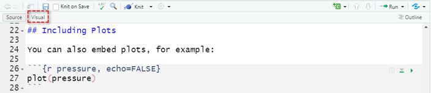
Figure 6.14: 教材图 6.14：启用可视化 Markdown 编辑器。
knitr::kable() 可以把数据框或矩阵生成简单表格。下面执行教材中的 mtcars 示例并显示结果。
Code
# 选取 mtcars 的前 3 行、前 7 列。
mtcars_table <- mtcars[1:3, 1:7]
# 设置对齐、小数位、列名和表题。
knitr::kable(
mtcars_table,
align = c("l", "c", "c", "r", "r", "r", "r"),
digits = 2,
col.names = stringr::str_c("x", 1:7),
caption = "教材表 6.1：mtcars 部分数据"
)| x1 | x2 | x3 | x4 | x5 | x6 | x7 | |
|---|---|---|---|---|---|---|---|
| Mazda RX4 | 21.0 | 6 | 160 | 110 | 3.90 | 2.62 | 16.46 |
| Mazda RX4 Wag | 21.0 | 6 | 160 | 110 | 3.90 | 2.88 | 17.02 |
| Datsun 710 | 22.8 | 4 | 108 | 93 | 3.85 | 2.32 | 18.61 |
6.1.3 表格输出
教材介绍 kableExtra、huxtable、flextable、gt、DT 与 reactable 等表格包。它们都能控制背景、边框、对齐、颜色与数字格式，但支持的输出格式有所不同。
6.1.3.1 导出三线表到 Word
教材用 flextable 增加标题和分组表头，设置对齐、颜色、粗体、合并与条件高亮，最后写入 Word。该操作创建外部文件，因此构建时不执行。
Code
library(flextable)
iris[1:5, ] |>
# 把数据框转换为 flextable 对象。
flextable() |>
set_caption("定制表格示例") |>
# 增加跨列分组表头。
add_header_row(colwidths = c(2, 2, 1), values = c("Sepal", "Petal", "")) |>
# 设置全表居中、表头红色并加粗。
align(align = "center", part = "all") |>
color(color = "red", part = "header") |>
bold(bold = TRUE, part = "header") |>
merge_v(j = 3:4) |>
# 高亮 Sepal.Length 小于 5 的单元格。
highlight(i = ~ Sepal.Length < 5, j = 1, color = "yellow") |>
# 保存为 Word 文件。
save_as_docx(path = "output/threelinetable.docx")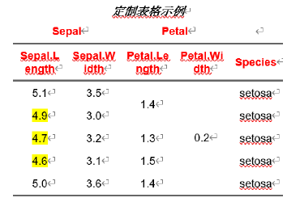
Figure 6.15: 教材图 6.15：自动生成三线表。
6.1.3.2 整理统计模型结果
教材用 modelsummary 接收多个模型对象，并修改参数名称、显著性星号、小数位、标题和拟合优度统计量。示例数据 Guerry.csv 未包含在当前配套资料中，因此保留教材方法但不执行。
Code
# 读取教材使用的数据。
df <- readr::read_csv("data/Guerry.csv")
# 建立 OLS 与 Poisson 两个模型。
models <- list(
"OLS" = lm(Donations ~ Literacy + Clergy, data = df),
"Poisson" = glm(
Donations ~ Literacy + Commerce,
family = poisson, data = df
)
)
# 建立模型项原名与显示名的对应关系。
cm <- c(
"(Intercept)" = "Constant", "Literacy" = "Literacy (%)",
"Clergy" = "Priests/capita"
)
library(modelsummary)
library(huxtable)
modelsummary(
models, output = "huxtable", coef_map = cm,
stars = TRUE, fmt = "%.2f",
title = "Regression Tables with modelsummary",
gof_omit = "IC|Log|Adj"
) |>
# 修改指定行的字体颜色和背景色。
set_text_color(row = 4, col = 1:ncol(.), value = "red") |>
set_background_color(row = 6, col = 1:ncol(.), value = "lightblue") |>
quick_pdf(file = "output/tablepdf.pdf")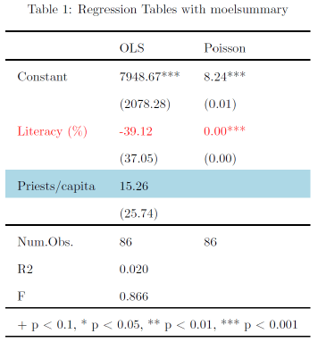
Figure 6.16: 教材图 6.16—6.17：模型表导出为 PDF 与 LaTeX。
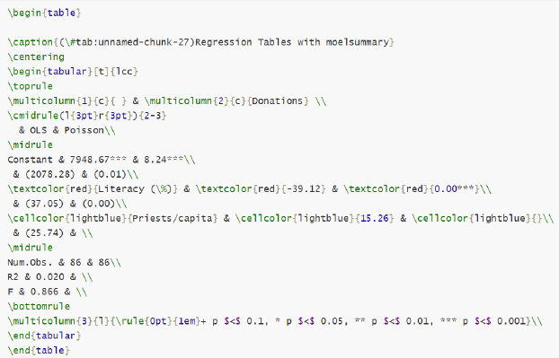
Figure 6.17: 教材图 6.16—6.17：模型表导出为 PDF 与 LaTeX。
6.1.3.3 参数化报告与批量编译
参数化报告在 YAML 的 params 中设置数据集名称，正文通过 params$name 取得参数。教材再用 purrr::walk() 对多个名称重复调用 render()。
---
title: "数据概览：（此处使用行内 R 代码读取 params$name）"
params:
name: "input your data name"
output: html_document
---
``` r
# 根据 YAML 参数取得相应数据对象，并输出概要。
df <- get(params$name)
summary(df)
```Code
# 教材要求用同一模板分析三个内置数据集。
names <- c("iris", "mtcars", "CO2")
purrr::walk(names, \(data_name) {
# 每次传入一个数据集名称，并设置对应输出文件名。
rmarkdown::render(
"Reproducible.Rmd",
params = list(name = data_name),
output_file = paste0(data_name, "分析报告.html")
)
})6.2 R 与 LaTeX 交互
LaTeX 擅长数学公式、书籍、期刊论文和学术报告排版。教材给出的 PDF 路径是 .Rmd → .md → .tex → .pdf，R Markdown 把代码结果嵌入这一流程。
6.2.1 LaTeX 开发环境
教材推荐 R 用户采用 TinyTeX 与 RStudio。TinyTeX 保留 LaTeX 核心组件，并能补充编译所需宏包；tinytex 包提供 R 中的管理函数。
6.2.1.1 Windows 与 macOS 安装路线（课程补充）
LaTeX 不是一个单独的编辑器，而是一套排版系统。要让 R Markdown 生成 PDF，计算机上必须存在一个 LaTeX 发行版，其中包含 xelatex、pdflatex、宏包管理器和常用字体支持。对本课程而言，选择一种发行版即可，不建议初学者同时安装多套发行版，以免 IDE 找到错误的可执行文件。
| 使用情形 | Windows | macOS | 特点 |
|---|---|---|---|
| 本课程中文 LaTeX 教学 | CTeX 中文套装 | MacTeX | Windows 课程环境优先采用 CTeX，已集成 MiKTeX 与常用中文支持 |
| 轻量编译 R Markdown | TinyTeX | TinyTeX | 体积较小，tinytex 包可协助安装缺失宏包 |
| 希望安装完整 TeX Live | TeX Live | MacTeX | 宏包较齐全，但下载和占用空间较大 |
| 单独使用 MiKTeX | MiKTeX | — | Windows 上可通过 MiKTeX Console 管理与按需安装宏包 |
上述入口均来自项目官方页面，已于 2026 年 8 月核对：
- TinyTeX（Windows 与 macOS）：TinyTeX 官方安装页；
- Windows · CTeX 中文套装（本课程推荐）：CTeX 套装官方页面及其下载中心；
- Windows · TeX Live：TeX Live on Windows，也可直接下载官方网络安装器
install-tl-windows.exe； - Windows · MiKTeX：MiKTeX 官方下载页；
- macOS · MacTeX：MacTeX 官方下载页。
6.2.1.1.1 Windows 安装步骤
路线 A：CTeX 中文套装（本课程 Windows 环境推荐）
CTeX 官方说明，该中文套装以 Windows 下的 MiKTeX 为基础，同时集成 WinEdt、Ghostscript、GSview、中文宏包与模板，并支持 CJK、xeCJK 等中文处理方式。官方页面当前列出的最新版为 v3.1；下载中心提供基础版、完整版和更新文件。
- 打开 CTeX 套装官方页面，进入下载中心；
- 选择“最新版本”。一般 64 位 Windows 可选择文件名带
_x64.exe的基础版；基础版已经包含 MiKTeX 基本安装和中文常用宏包； - 如果选择完整版，需要同时下载同名的
_Full.exe和_Full.nsisbin，并把两个文件放在同一目录后再运行安装程序； - 若计算机仍安装 CTeX 2.9.2 或更旧版本，官方说明不能直接升级到 3.0 及以上版本，应先卸载旧版，再安装新版；
- 按安装向导完成安装。安装后可打开 MiKTeX Console 检查更新和宏包状态；
- 完全退出并重新打开 RStudio 或 Positron，然后执行
Sys.which("xelatex")； - 使用本节的
latex-check.Rmd编译测试中文和数学公式。
CTeX 官方版权说明限定该套装用于科研与学术目的，不得用于商业目的。本课程属于教学使用；若学生后续用于商业项目，应改用许可证适合该场景的 TeX Live、MiKTeX 或 TinyTeX，并自行核对相关软件许可证。
路线 B：TinyTeX（轻量替代）
- 先安装 R，并打开 RStudio 或 Positron 的 R Console；
- 安装
tinytexR 包； - 调用
install_tinytex()下载并安装 TinyTeX； - 安装完成后重启 RStudio 或 Positron，让 IDE 重新读取系统路径；
- 用本节后面的验证命令检查
xelatex，再编译最小 PDF。
Code
# 安装用于管理 TinyTeX 的 R 包；通常只需执行一次。
install.packages("tinytex")
# 下载并安装 TinyTeX 发行版。
# 该命令会写入用户目录并下载文件，因此课程讲义构建时不执行。
tinytex::install_tinytex()
# 若以后需要卸载，应显式运行：
# tinytex::uninstall_tinytex()路线 C：TeX Live
- 打开 TeX Live Windows 官方页面；
- 下载并运行
install-tl-windows.exe； - 初学者可以保留默认方案，也可以在 Advanced 中调整安装集合和目录；
- 等待宏包下载与安装完成。官方安装器通常会在 Windows 中配置 TeX Live 菜单、文件关联和可执行文件路径；
- 重启 IDE 后运行
Sys.which("xelatex")。
路线 D：单独安装 MiKTeX
- 打开 MiKTeX 官方下载页，下载 Windows Basic Installer；
- 运行安装程序并选择仅当前用户或所有用户；没有集中运维需求时，个人安装通常更简单；
- 安装后打开 MiKTeX Console，先执行更新；
- 在 Settings 中确认缺失宏包的安装策略；
- 重启 IDE 并验证
xelatex。
6.2.1.1.2 macOS 安装步骤
路线 A：TinyTeX（本课程推荐）
TinyTeX 在 macOS 和 Windows 中使用相同的 R 安装命令。官方说明其默认安装在用户的 ~/Library/TinyTeX 中。安装完成后应重启 RStudio 或 Positron。
Code
# 在 macOS 的 R Console 中安装管理包和 TinyTeX。
install.packages("tinytex")
tinytex::install_tinytex()路线 B：MacTeX
- 打开 MacTeX 官方下载页；
- 下载
MacTeX.pkg。安装包较大，下载前应预留足够磁盘空间； - 双击安装包并按照 macOS 安装向导完成安装；
- MacTeX 会安装 TeX Live，同时提供 TeXShop、TeX Live Utility 等 macOS 工具；
- 安装完成后重启 IDE。MacTeX 通常通过
/Library/TeX/texbin向应用程序提供 LaTeX 命令。
6.2.1.1.3 安装后验证
无论选择哪一种发行版，都应先确认 R 能找到 LaTeX 引擎，再编译一份最小文档。若 Sys.which() 返回空字符串，先完全退出并重启 IDE；仍为空时，再检查发行版是否安装完成以及 PATH 是否正确。
Code
# 查看 R 当前能够找到的 LaTeX 可执行文件位置。
Sys.which(c("xelatex", "pdflatex"))
# 如果安装的是 TinyTeX，此函数应返回 TRUE。
tinytex::is_tinytex()
# 查看 XeLaTeX 版本，确认命令能够真正启动。
system2("xelatex", "--version", stdout = TRUE) |>
head(1)可建立如下最小文件 latex-check.Rmd：
---
title: "LaTeX 安装检查"
output:
pdf_document:
latex_engine: xelatex
---正文输入一行中文和公式 \(E=mc^2\)，然后执行：
Code
# 编译最小测试文档；成功时会生成 latex-check.pdf。
rmarkdown::render("latex-check.Rmd")若错误信息提示缺少某个 .sty 文件，TinyTeX 用户通常可再次用 rmarkdown::render() 或 tinytex::xelatex() 编译，由 tinytex 协助安装缺失宏包；TeX Live 用户可用 tlmgr 查找并安装宏包；MiKTeX 用户可在 MiKTeX Console 中安装或启用按需安装。
6.2.2 LaTeX 嵌入 R Markdown
6.2.3 期刊论文、幻灯片和书籍模板
教材介绍 rticles 期刊论文模板；xaringan、PowerPoint 和 Beamer 幻灯片模板；以及把多个 R Markdown 文件组织成书籍的 bookdown。
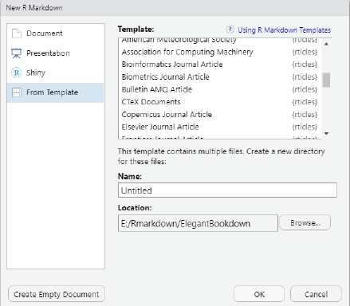
Figure 6.19: 教材图 6.19—6.20：期刊模板与 bookdown 源文件。
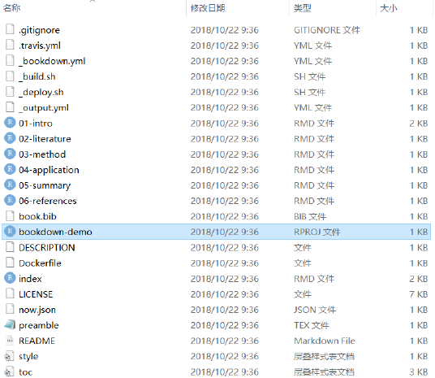
Figure 6.20: 教材图 6.19—6.20：期刊模板与 bookdown 源文件。
bookdown 用 _bookdown.yml 控制章节顺序，用 _output.yml 控制输出格式。图、表、章节及定理环境可以编号和交叉引用；中文 PDF 通常使用 xelatex 与 ctexbook。
Code
# 从 index.Rmd 开始，按 _bookdown.yml 编译整本书。
bookdown::render_book("index.Rmd")6.3 R 与 Git 版本控制
6.3.1 Git 版本控制
Git 用提交记录保存项目在不同时间点的状态，可以比较修改、恢复历史版本并支持协作。GitHub、GitLab、Gitee 等平台在 Git 仓库之上提供远程托管与拉取请求。R Markdown 的纯文本源文件很适合纳入版本控制。
6.3.2 RStudio 与 Git/GitHub 交互
6.3.2.1 安装并配置 Git
安装 Git 后先设置用户名和邮箱。教材使用 usethis::use_git_config()；该命令会写入 Git 配置，因此不执行。
Code
# 写入提交者身份信息，请替换为自己的姓名和邮箱。
usethis::use_git_config(
user.name = "your-name",
user.email = "your-email@example.com"
)教材随后演示创建 RSA Key 并在 GitHub 添加公钥。密钥属于凭据，不应复制到课程文档或公开仓库。
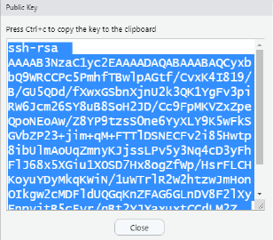
Figure 6.21: 教材图 6.21—6.23：创建 RSA Key 并添加公钥。
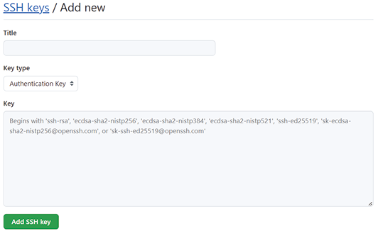
Figure 6.22: 教材图 6.21—6.23：创建 RSA Key 并添加公钥。
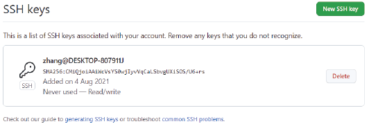
Figure 6.23: 教材图 6.21—6.23：创建 RSA Key 并添加公钥。
6.3.2.2 创建仓库
教材先在 GitHub 创建远程仓库并复制 HTTPS 或 SSH 地址，再在 RStudio 中选择 New Project → Version Control → Git 建立本地项目。
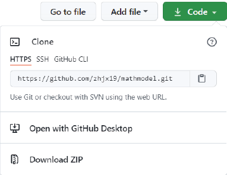
Figure 6.24: 教材图 6.24—6.25：复制仓库地址并创建带 Git 的 R 项目。
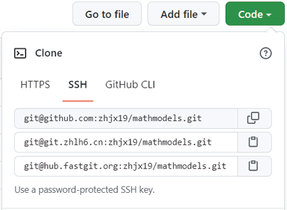
Figure 6.25: 教材图 6.24—6.25：复制仓库地址并创建带 Git 的 R 项目。
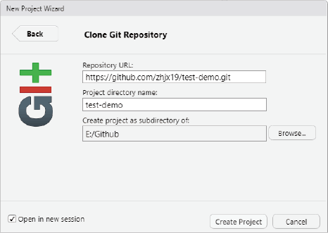
Figure 6.26: 教材图 6.24—6.25：复制仓库地址并创建带 Git 的 R 项目。
6.3.2.3 分支与合并
分支让协作者在不直接改动主分支的情况下工作。教材建立 Collect_Datas 分支，再依次完成暂存、提交和推送。
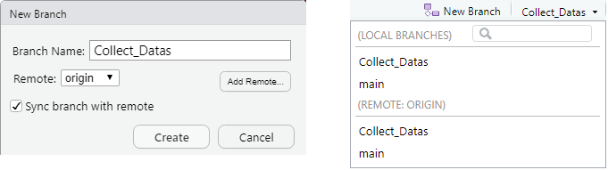
Figure 6.27: 教材图 6.26：创建与查看分支。
- Staged：勾选需要纳入下一次提交的文件；
- Commit：填写能够说明改动的提交信息；
- Push：把本地分支提交推送到远程仓库。
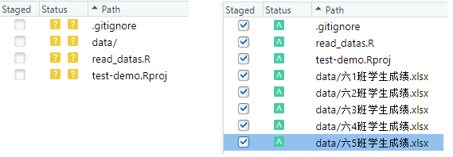
Figure 6.28: 教材图 6.27—6.29：暂存、提交与推送。
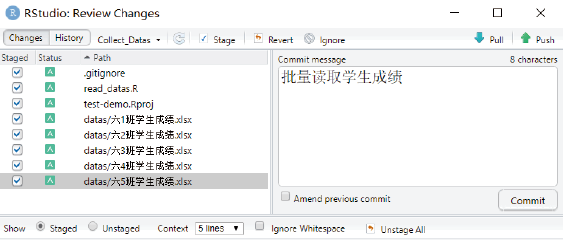
Figure 6.29: 教材图 6.27—6.29：暂存、提交与推送。
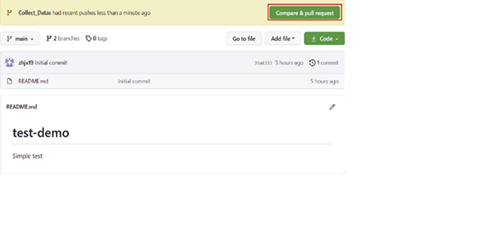
Figure 6.30: 教材图 6.27—6.29：暂存、提交与推送。
6.4 R Shiny
Shiny 使用 R 创建浏览器中的交互应用。教材把应用分为用户界面 ui 和服务器逻辑 server：前者定义控件与输出位置，后者定义输入变化后如何更新输出。
6.4.1 Shiny 基本语法
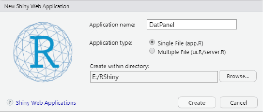
Figure 6.33: 教材图 6.32：创建 Shiny 应用。
6.4.1.1 Shiny app 基本结构
Code
library(shiny)
# ui 定义浏览器中的输入控件和输出区域。
ui <- fluidPage(
# ...界面元素...
)
# server 根据 input 计算结果，并写入 output。
server <- function(input, output, session) {
# ...响应逻辑...
}
# 组合 ui 与 server 并运行应用。
shinyApp(ui = ui, server = server)fluidPage() 建立页面；titlePanel() 设置标题；sidebarLayout() 组合侧边栏与主面板；输入控件用唯一 inputId 标识；plotOutput()、textOutput() 等函数预留输出位置。
教材用按钮、选择框、日期、数值、滑块和文本框演示控件。该示例会启动持续运行的应用，因此构建时不执行。
Code
library(shiny)
ui <- fluidPage(
titlePanel("常用控件"),
fluidRow(
column(3, actionButton("action", "点击"), submitButton("提交")),
column(3, checkboxInput("checkbox", "选项A", value = TRUE)),
column(3, checkboxGroupInput(
"checkGroup", "多选框",
choices = list("选项1" = 1, "选项2" = 2, "选项3" = 3),
selected = 1
)),
column(3, dateInput("date", "输入日期", value = "2021-01-01"))
),
fluidRow(
column(3, numericInput("num", "输入数值", value = 1)),
column(3, radioButtons(
"radio", "单选按钮",
choices = list("选项1" = 1, "选项2" = 2, "选项3" = 3),
selected = 1
)),
column(3, sliderInput("slider1", "滑动条", 0, 100, 50)),
column(3, textInput("text", "文本输入", value = "输入文本..."))
)
)
# 空 server 表示控件暂时不产生输出。
server <- function(input, output) {}
shinyApp(ui = ui, server = server)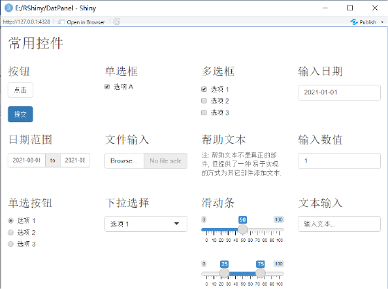
Figure 6.34: 教材图 6.33：Shiny 常用控件面板。
6.4.1.2 server 后端
input$name 取得控件值，output$greeting 对应界面输出位置，renderText() 声明如何生成文本。输入改变时，Shiny 自动重算受影响的输出。
Code
ui <- shiny::fluidPage(
# input$name 对应这个输入框。
shiny::textInput("name", "请输入您的姓名："),
shiny::textOutput("greeting")
)
server <- function(input, output, session) {
output$greeting <- shiny::renderText({
# 输入变化后自动重新生成问候语。
paste0("您好 ", input$name, "！")
})
}
shiny::shinyApp(ui = ui, server = server)HTML 讲义中的应用由浏览器直接运行；PDF 讲义仍使用教材截图。
6.4.2 响应表达式
reactive() 把一段计算声明为随输入变化的响应对象，使用时写成函数调用形式，例如 Xbar()。教材用中心极限定理说明“输入 → 响应数据 → 输出图形”的依赖关系。
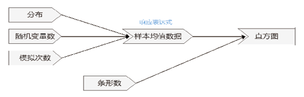
Figure 6.35: 教材图 6.35：中心极限定理应用的响应关系。
Code
ui <- shiny::fluidPage(
shiny::titlePanel("演示中心极限定理"),
shiny::sidebarLayout(
position = "right",
shiny::sidebarPanel(
shiny::selectInput("distr", "分布：", c("均匀", "二项", "泊松", "指数")),
shiny::sliderInput("samples", "随机变量数：", 1, 100, 10),
shiny::sliderInput("nsim", "模拟样本量：", 1000, 10000, 1000, step = 100),
shiny::sliderInput("bins", "条形数：", 10, 100, 50)
),
shiny::mainPanel(shiny::plotOutput("plot"))
)
)
server <- function(input, output) {
Xbar <- shiny::reactive({
# 取得随机变量个数和模拟样本量。
n <- input$samples
m <- input$nsim
# 按用户选择的分布生成 m × n 个随机数。
xs <- switch(
input$distr,
"均匀" = runif(m * n, 0, 1),
"二项" = rbinom(m * n, 10, 0.3),
"泊松" = rpois(m * n, 5),
"指数" = rexp(m * n, 1)
)
# 每 n 个随机变量求均值，得到 m 个样本均值。
data.frame(x = rowMeans(matrix(xs, ncol = n)))
})
output$plot <- shiny::renderPlot({
ggplot(Xbar(), aes(x)) +
geom_histogram(
alpha = 0.2, bins = input$bins,
fill = "steelblue", color = "black"
)
})
}
shiny::shinyApp(ui = ui, server = server)HTML 讲义中可以改变分布、随机变量数、模拟样本量和条形数；PDF 讲义仍使用教材截图。
6.4.3 案例：探索性数据展板
教材把 ecostats 数据、地区下拉框、Plotly 折线图和 DT 数据表组合为展板。selected() 只返回当前地区数据，两个输出共同依赖该响应对象。
Code
# 载入教材配套数据，并准备地区列表。
load("data/ecostats.rda")
countries <- unique(ecostats$Region)
ui <- shiny::fluidPage(
shiny::titlePanel("交互探索 ecostats 数据"),
shiny::sidebarLayout(
shiny::sidebarPanel(shiny::selectInput(
"name", "选择地区：", choices = countries, selected = "黑龙江"
)),
shiny::mainPanel(shiny::tabsetPanel(
shiny::tabPanel("人均 GDP 图", plotly::plotlyOutput("eco_plot")),
shiny::tabPanel("数据表", DT::dataTableOutput("eco_data"))
))
)
)
server <- function(input, output) {
selected <- shiny::reactive({
# 每次地区改变时，只保留相应观测。
ecostats |> filter(Region == input$name)
})
output$eco_plot <- plotly::renderPlotly({
# 绘制当前地区的人均 GDP 时间趋势。
p <- ggplot(selected(), aes(Year, gdpPercap)) +
geom_line(color = "red", linewidth = 1.2) +
labs(title = paste0(input$name, "人均 GDP 变化趋势"), x = "年份", y = "人均 GDP")
plotly::ggplotly(p)
})
output$eco_data <- DT::renderDataTable({
# 建立带导出按钮的交互表格。
DT::datatable(
selected(), extensions = "Buttons",
caption = paste0(input$name, "数据"),
options = list(dom = "Bfrtip", buttons = c("copy", "csv", "excel", "pdf", "print"))
)
})
}
shiny::shinyApp(ui = ui, server = server)HTML 讲义中的展板可以选择地区、缩放和悬停查看 Plotly 图形，也可以切换到数据表进行搜索、排序和导出；PDF 讲义仍使用教材截图。
6.5 开发 R 包
R 包规定函数、数据、文档、测试和元数据的结构，使成熟代码更容易复用、检查和分享。
6.5.1 准备开发环境
教材要求安装 Rtools（Windows）或相应系统编译工具，并用 devtools::has_devel() 或 Sys.which("make") 检查。开发工具安装会改变系统环境，因此不自动执行。
Code
# 检查是否具备 R 包源码编译工具。
devtools::has_devel()
Sys.which("make")6.5.2 编写 R 包工作流
6.5.2.1 创建 R 包
Code
# 在当前路径建立 R 包源码项目。
devtools::create_package(getwd())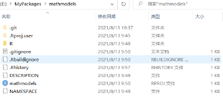
Figure 6.36: 教材图 6.39：R 包源码文件结构。
6.5.2.2 添加函数
教材在 R/AHP.R 中编写层次分析法函数，返回权重、最大特征值、一致性指标和一致性比率。
Code
# 输入 A：成对比较矩阵。
AHP <- function(A) {
# 计算特征值和特征向量。
rlt <- eigen(A)
Lmax <- Re(rlt$values[1])
# 归一化最大特征值对应的特征向量。
W <- Re(rlt$vectors[, 1]) / sum(Re(rlt$vectors[, 1]))
# 计算一致性指标 CI 和一致性比率 CR。
n <- nrow(A)
CI <- (Lmax - n) / (n - 1)
RI <- c(0, 0, 0.58, 0.90, 1.12, 1.24, 1.32, 1.41, 1.45, 1.49, 1.51)
CR <- CI / RI[n]
# 返回教材规定的四个结果。
list(W = W, CR = CR, Lmax = Lmax, CI = CI)
}
# 用教材测试矩阵运行函数并显示反馈。
A_test <- matrix(c(1, 1 / 2, 2, 1), byrow = TRUE, nrow = 2)
AHP(A_test)
#> $W
#> [1] 0.3333333 0.6666667
#>
#> $CR
#> [1] NaN
#>
#> $Lmax
#> [1] 2
#>
#> $CI
#> [1] 0函数前的 roxygen2 注释说明标题、用途、参数、返回值、导出规则和示例。document() 据此生成帮助页和 NAMESPACE。
Code
#' @title AHP: Analytic Hierarchy Process
#' @description Calculate AHP weights and consistency measures.
#' @param A A numeric pairwise comparison matrix.
#' @return A list containing W, CR, Lmax and CI.
#' @export
#' @examples
#' A <- matrix(c(1, 1/2, 2, 1), byrow = TRUE, nrow = 2)
#' AHP(A)
# 生成函数文档并更新 NAMESPACE。
devtools::document()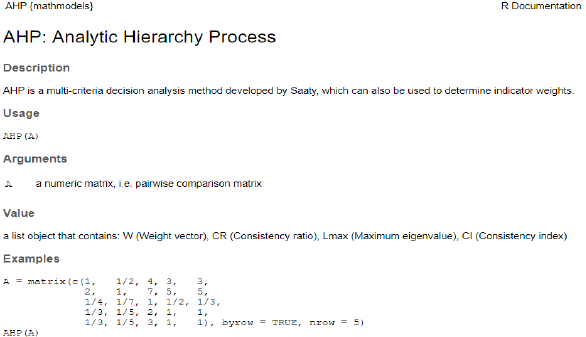
Figure 6.37: 教材图 6.40：文档化后的函数帮助页面。
6.5.2.3 编辑元数据
DESCRIPTION 记录包名、标题、版本、作者、说明、许可证、网址、编码和依赖。教材用 use_package() 增加 Imports 或 Suggests，用 use_agpl3_license() 写入许可证。
Code
# 添加运行时依赖、建议依赖和许可证。
usethis::use_package("deSolve")
usethis::use_package("deSolve", "Suggests")
usethis::use_agpl3_license()6.5.2.4 使用数据集
use_data() 把对象保存到 data/；数据集也需要 roxygen2 文档。内部数据设置 internal = TRUE，原始文件通常放在 inst/extdata/。
Code
# 保存公开数据集，并建立数据文档源文件。
usethis::use_data(penguins)
usethis::use_r("penguins")
# 保存内部数据；定位安装包中的原始数据文件。
usethis::use_data(penguins, internal = TRUE)
system.file("extdata", "mtcars.csv", package = "readr", mustWork = TRUE)6.5.2.5 单元测试
教材用 testthat 检查 AHP() 的权重数值与返回类型。下面直接运行相同断言并显示测试反馈。
Code
testthat::test_that("AHP weights and type", {
A <- matrix(c(1, 1 / 2, 2, 1), byrow = TRUE, nrow = 2)
rlt <- AHP(A)
# 权重应在给定容差内等于 1/3 与 2/3。
testthat::expect_equal(rlt$W, c(0.3333, 0.6667), tolerance = 0.001)
# 返回对象应为列表。
testthat::expect_type(rlt, "list")
})
#> Test passed with 2 successes 🥇.完成函数、文档、数据和测试后，教材依次使用 document()、test()、check() 与 install()。这些操作会改写或安装包，因此不在讲义构建时执行。
Code
devtools::document() # 更新文档和 NAMESPACE。
devtools::test() # 运行单元测试。
devtools::check() # 执行完整 R CMD check。
devtools::install() # 安装检查通过的源码包。6.5.3 发布到 CRAN
教材的发布流程包括远程跨平台检测、编写 cran-comments.md、准备 README 与 NEWS、捆绑源码包，最后在 CRAN 提交页面上传。
Code
# 验证邮箱并运行远程 CRAN 检查。
rhub::validate_email("your-email@example.com")
results <- rhub::check_for_cran()
results$cran_summary()
# 创建提交说明、README 和 NEWS。
usethis::use_cran_comments()
usethis::use_readme_rmd()
usethis::use_news_md()
# 捆绑为可提交的 .tar.gz 文件。
devtools::build()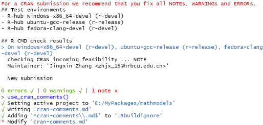
Figure 6.38: 教材图 6.41—6.43：CRAN 检测、捆绑与提交。
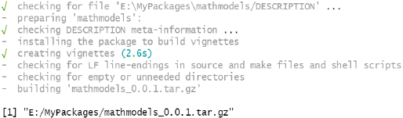
Figure 6.39: 教材图 6.41—6.43：CRAN 检测、捆绑与提交。
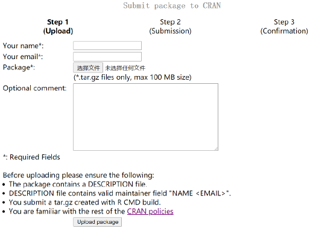
Figure 6.40: 教材图 6.41—6.43：CRAN 检测、捆绑与提交。